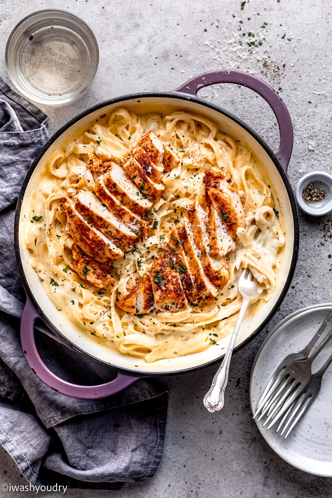

Alfredo!

No Documentations of Our Home-Cooked Alfredo
Ingredients
- fettucine pasta
- 6 tablespoon butter
- 1 garlic clove
- 1 1/2 cups heavy cream
- salt to taste
- 1 1/4 cup shredded cheese
- seasonings (italian seasoning, black pepper, ect.)
Steps!
- cook fettucine. save some pasta water.
- heat butter over medium heat. add minced garlic and cook 1-2 minutes, until fragrant. whisk in heavy cream.
- let heavy cream reduce and cook for 5-8 minutes. add half of the parmesan cheese to mixture and whisk until smooth.
- toss sauce with pasta and add half of the parmesan cheese. once tossed garnish with the remaining cheese. use pasta water if too thick.
Return To Home